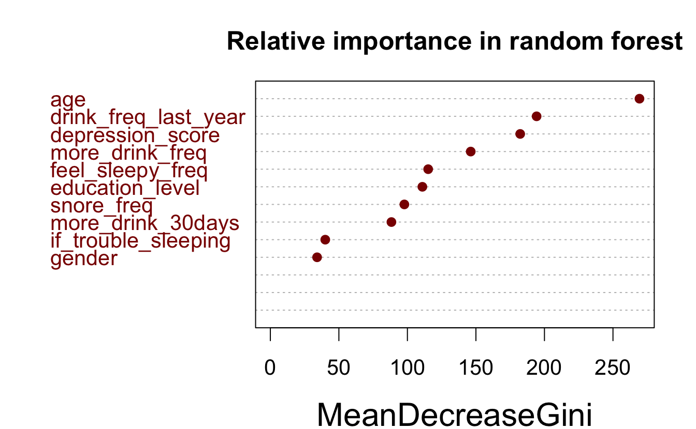
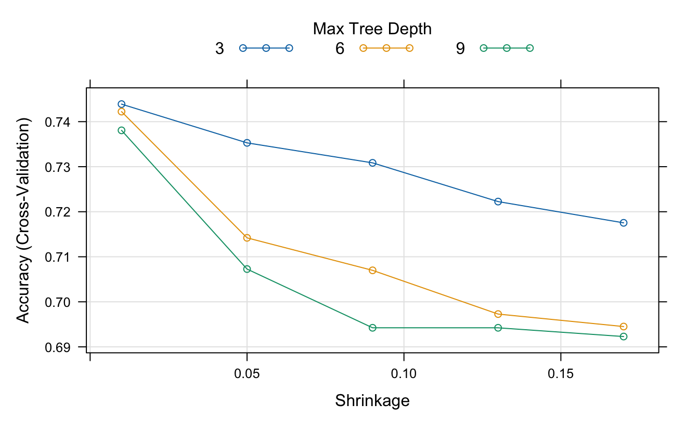
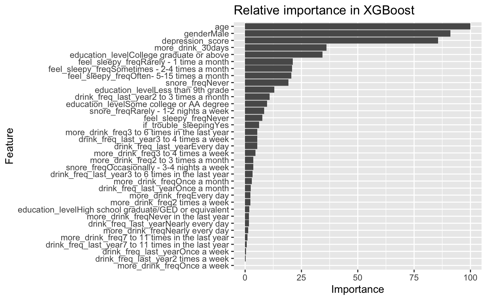

| Variable | Estimate | Pr(>|z|) |
|---|---|---|
| gender Male | -0.623 | < 0.001* |
| education_level College graduate or above | 0.257 | 0.091 |
| education_level High school graduate/GED or equivalent | 0.003 | 0.983 |
| education_level Less than 9th grade | 0.625 | 0.015* |
| education_level Some college or AA degree | -0.053 | 0.710 |
| age | -0.014 | < 0.001* |
| snore_freq Never | 0.276 | 0.015* |
| snore_freq Occasionally - 3-4 nights a week | 0.084 | 0.462 |
| snore_freq Rarely - 1-2 nights a week | 0.184 | 0.078 |
| feel_sleepy_freq Never | 0.876 | < 0.001* |
| feel_sleepy_freq Often- 5-15 times a month | 0.423 | 0.005* |
| feel_sleepy_freq Rarely - 1 time a month | 0.902 | < 0.001* |
| feel_sleepy_freq Sometimes - 2-4 times a month | 0.775 | < 0.001* |
| depression_score | -0.019 | 0.038* |
AIC: 3953.6

